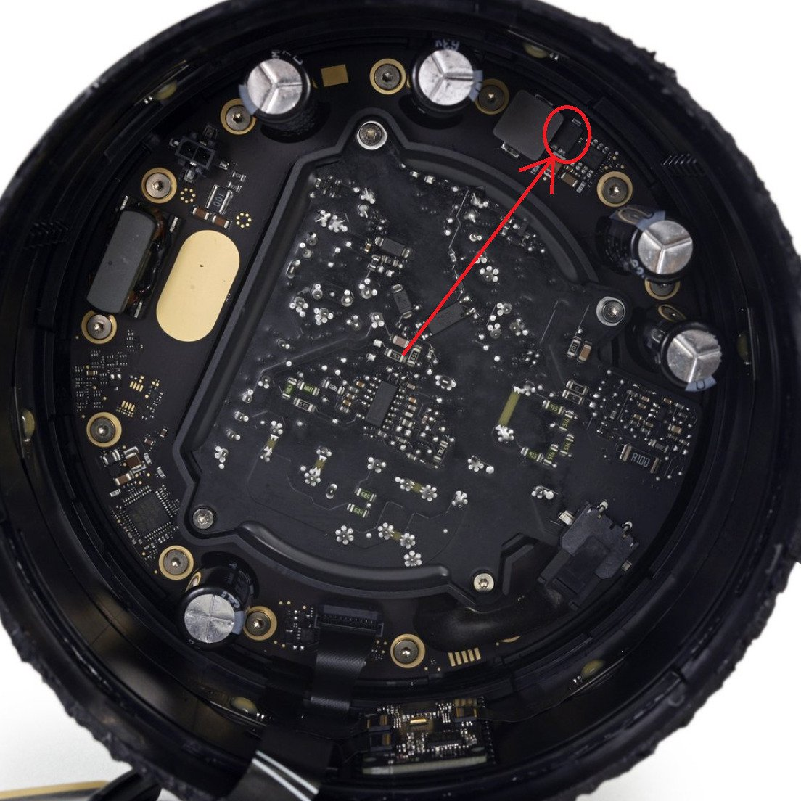
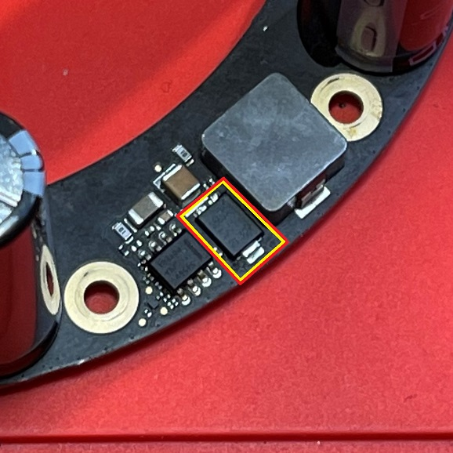
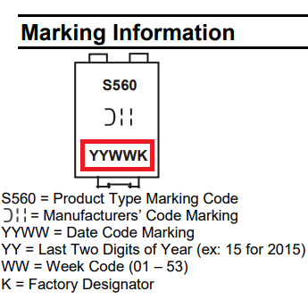
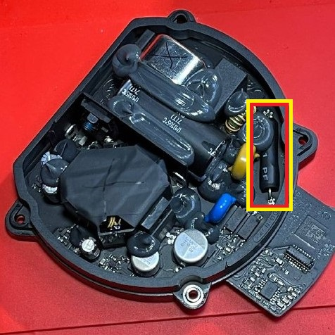
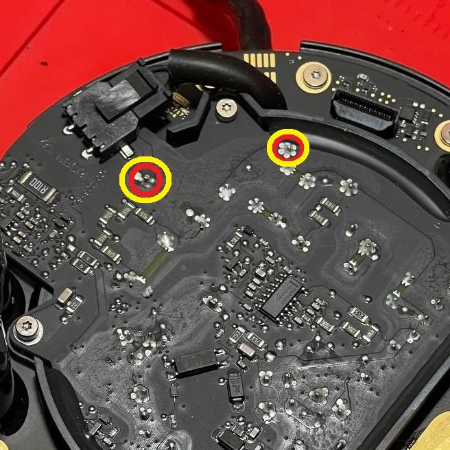
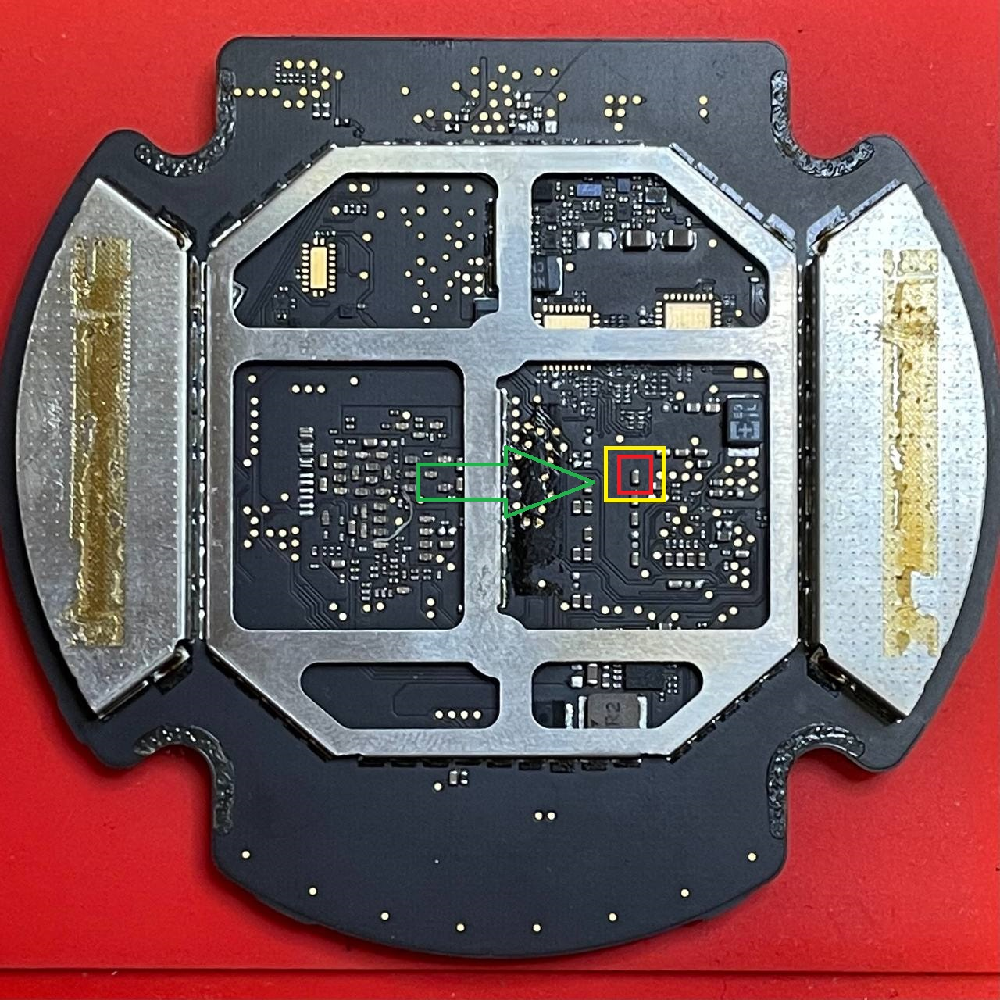
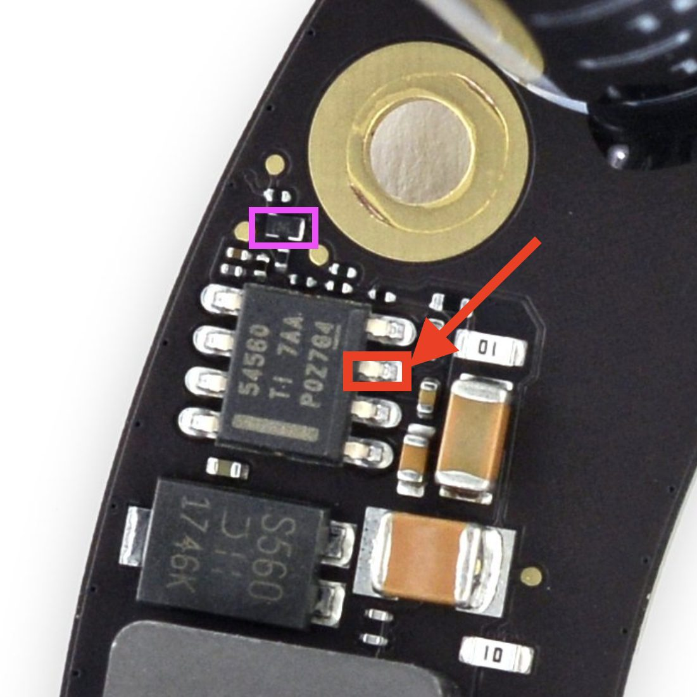

No Power - Shorted S.B. Diode
Symptoms: No power, no lights, and no response. Power draw at the outlet will typically be around 2-10 Watts. If left plugged in for some time, the side of the HomePod may feel slightly warmer.
Diagnosis: Diode is located on the amplifier board. Use a multimeter in continuity test mode to test if diode is shorted by placing one probe onto the larger pin of the diode, and the other probe on one of the two smaller pins of the diode. If meter shows it's shorted, move probe from first small pin to other small pin. If you still see a short, remove the diode and test with the diode off the board. If just the diode shows shorted and not the board, replace the diode.
If your diode tests OK, check for less-common no power issues.
Repair: Replace shorted diode or any diode with date code 1746k-1748k with a newer date and part number PDS560-13, PDS560-13Q, PDS760-13, or any other 60v 5a schottky barrier diode of similar specs to permanently repair Video guide available on YouTube.
Root Cause: Diodes manufactured between week 46 and week 48 of 2017 (date code 1746k-1748k) have apparent QA issues with incredibly high failure rates. No other date codes have been found to fail, despite a wider date range used. Apple used a large date range of diodes during manufacturing and there is no correlation to a diode's date code and a HomePod's serial number, so there is no way of telling what diode your homepod has without disassembly.
All first-generation HomePods, whether factory-new, factory "refurbished", or out of warranty replacements, will have the same chance of having this diode. Second generation HomePods have a bigger, newer diode and won't have this same failure.

Diode Location Inside HomePod

Diode Location On Removed Amp Board

Diode Date Code
Diode: PDS560-13. Can also use PDS760Q-13
No Power - Blown Power Supply Fuse
Symptoms: No power, no lights, and no response. Power draw at the outlet will be 0 Watts.
Diagnosis: Fuse is located on the underside of the power supply board. EU/UK power plugs also have a fuse in the power cable. Use multimeter in continuity mode to test if fuse was blown open.
Repair: If fuse is blown you should replace it with another "T3.15AH250V" fuse.
Root Cause: The fuse will blow as a result of a surge from the AC power source. A quality surge protector should help prevent this. Power strips alone provide no protection.

Fuse Location On Power Supply

Probe Points While Installed
No Power - Short on Logic Board
Symptoms: No power, no lights, and no response. Power draw at the outlet may be a few Watts. You may hear a quiet ticking / squealing sound from the logic board. Logic board may start to warm up.
Diagnosis: I have only seen two HomePods with No Power caused by this...in both cases, there was a shorted capacitor on the logic board. Both logic boards shorts were in different locations. You should be able to locate them with traditional short-finding methods like a thermal camera or applying flux or alcohol to the board and looking for smoke or bubbles.
Repair: Replace any shorted components! Since there are no schematics, the exact replacement components are unknown. You can harvest them from a bricked logic board, or ask me to check with a parts board! I have a brief repair video showing diagnosis and repair for one on YouTube.
Root Cause: Given that I've only seen this issue twice, both times from different shorts on the logic board, I'm guessing this is simply a case of capacitors just going bad. It happens.

Bad Cap Location on One Logic Board
Flux Smokes When Applied to Shorted Cap
No Power - Blown TPS and Shorted Component
Symptoms: No power, no lights, and no response. Power draw at the outlet may be a few Watts.
Diagnosis: Check for short to ground on the pin pictured below in red, on the TPS. Confirm short on TPS is gone with component in purple removed.
Repair: Replace shorted mosfet with "DMN2300UFB4-7B".
Avneesh is credited with helping me find the cause of this one during a Youtube Livestream,. and "nighthawk_94191" for finding the part number.
Root Cause: Unknown.

Shorted!